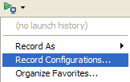
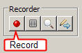
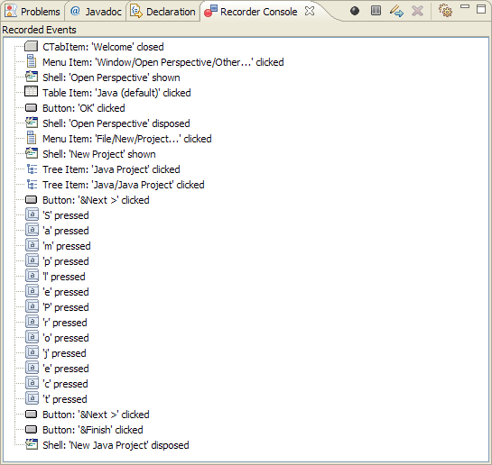
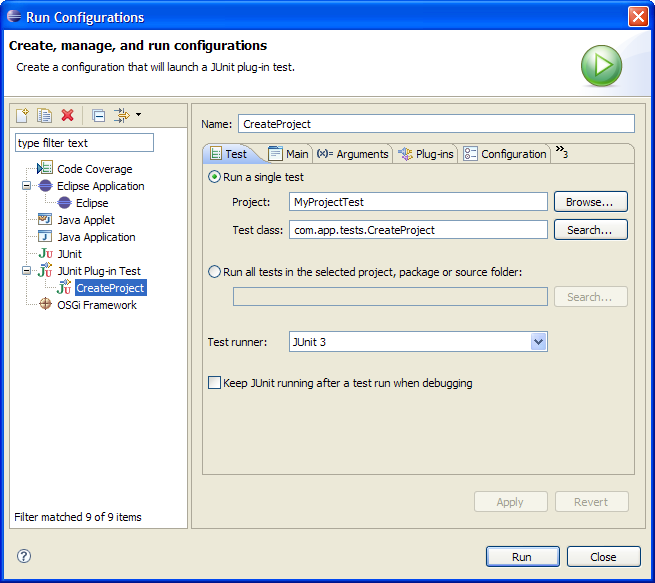

- Look for a tool item (
 )
that looks like the run arrow with a little console under it (should be
next to external tools). From its pull-down menu, select "Record Configurations..." to open the Record launch configuration window.
)
that looks like the run arrow with a little console under it (should be
next to external tools). From its pull-down menu, select "Record Configurations..." to open the Record launch configuration window.
 - In the left navigation of the launch configuration dialog, select Eclipse Application then click New (
 ).
).
- In the Name field, type Eclipse as the name of the launch configuration.
- Optionally, you can edit the Workspace Data Location to match the name of your launch configuration. Let's go ahead and change it to /runtime-Eclipse.
- Select the Clear check box to clear the runtime workspace before recording.
- Clear the Ask for confirmation before clearing check box.
- By default, the Program to Run is set to Run a product and Eclipse IDE is selected. Leave the default values since we are testing against the Eclipse workbench.
- In the Plug-ins tab, select All workspace and enabled
target plug-ins. If you are using a custom Target Platform, see Customizing PDE Targets.

- When you're ready, click Apply then click Record.
A new instance of Eclipse is launched and the recorder control opens in your development environment.
 - When you're ready to start recording, click the record button (red ball) in the recorder control.
At this point, any user interactions performed within the runtime Eclipse workbench will be recorded. As you record, recorded events are displayed in the recorder console as shown below.
For our test, let's create a new Java Project.
- First, if the Welcome screen is open, go ahead and close it by clicking the X on the right side of the Welcome text.

- Next, open the Java Perspective. Select Window > Open Perspective > Other...
- In the Open Perspective dialog, select Java and click Next.
- Next, select File > New > Project...
- In the New Project wizard, expand Java and select Java Project then click Next.
- In the Project name field, type SampleProject then click Finish. Do not exit Eclipse yet.
- In the Recorder control, click Pause.

- To close Eclipse, select File > Exit. The Recorder control should disappear and the New UI Test dialog appears.
See the Code Generation page for more information about the superclass and the handler options.

- In the New UI Test dialog, type MyProjectTest/src in the Source folder field. It is recommended that tests be placed into a project separate from the code under test.
- In the Package field, type my.app.tests as the name of the package.
- In the Name field, type CreateProject as the name of the test class.
- Click Finish.
You should now have a test project and a test class created and shown in the Package Explorer. Your test script should look like the following depending on your Eclipse version:

- To run your test, create a Test launch configuration. In the Package Explorer view, right-click the test file, CreateProject.java, and select Run As > Run Configurations...

- In the Run Configurations dialog, double-click JUnit Plug-in Test to create a new configuration. In the Test tab, Run a single test must be selected. If the Project and Test class names are not automatically populated, you can manually type the names or use the Browse and Search buttons to locate them. For our Test runner, let's use JUnit 3.
 - Click the Main tab. Since we are testing against the Eclipse IDE, the Program to Run option must be set to Eclipse (should be selected by default). Let's use the default JRE.

- When you're ready, click the Run button. Let go of the mouse and watch the tests run. The application under test, (Eclipse in this case), should be launched, and the UI tests are played back.
You can slow down the playback by enabling the playback delay preference.>